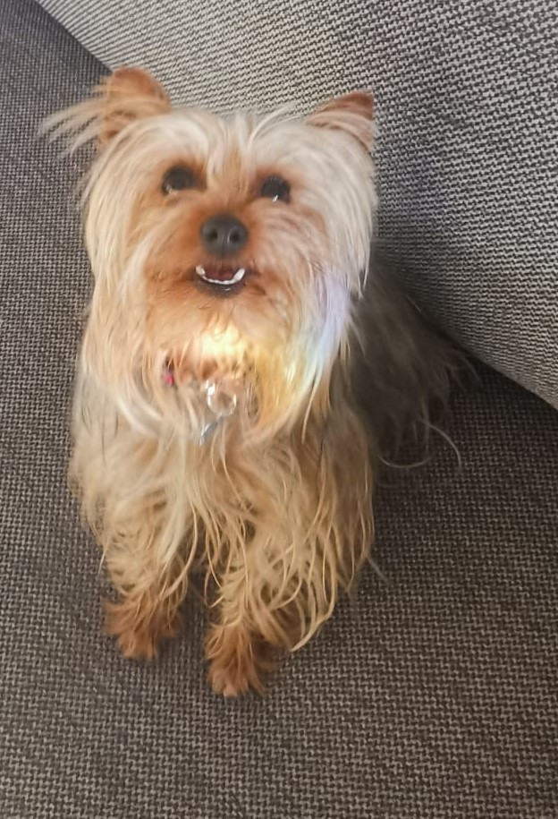

Esta pagina no va a tratar de mi, sino de mis perrhijos
Mi perrita se llama Phoebe, tiene 3 años con nosotros y es raza Yorkie, se llama así por el personaje de la serie de Friends. Esta es una foto de ella:
Este es mi otro perrito, se llama Chapito y es el hijo de la phoebe, el es aun un bebe ya que tiene 9 meses nada mas, se llama asi por el jugador del León Chapo Montes